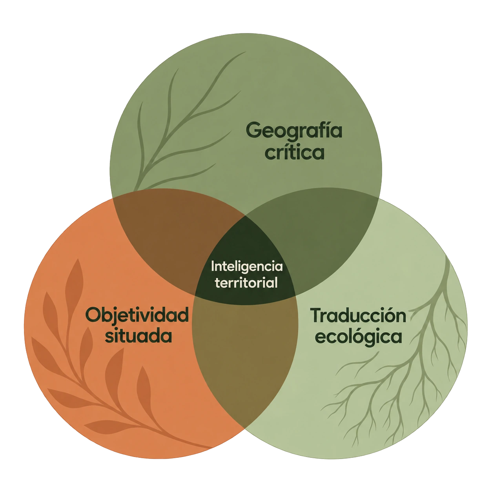

Datos ambientales locales sobre agua, suelo, aire y vegetación, cruzados con datos sociales.
Quiénes somos
Frente a la expansión inmobiliaria desordenada, la segregación socioespacial, la deforestación y la acumulación de residuos que se concretan en Córdoba, analizamos la realidad local desde la teoría de los sistemas complejos: las dinámicas de la sociedad y la naturaleza son interdependientes.

Marco teórico
Geografía crítica
El espacio urbano es una producción social atravesada por desigualdades estructurales. David Harvey
Objetividad situada
Toda medición técnica y uso de instrumentos tiene una responsabilidad ética. Donna Haraway · Bruno Latour
Traducción ecológica
El rigor de los datos se traduce en herramientas comprensibles para los vecinos. Ramon Folch · Pierre Bourdieu
Objetivos
Convertir datos técnicos en herramientas comprensibles y reflexividad crítica para el barrio.
Reforestación con nativas, corredores biológicos y huertas productivas.
Recopilar datos con rigor otorga a las juventudes la agencia política para transformar su ciudad.
Equipo
Jonatan Montes Gobelet
Virginia Llanos
May Cid Bodo
Guillermo Shwindt
Ruth Rivero
Pendiente: roles de cada integrante, resto del equipo, alianzas institucionales y personería jurídica.
Reconocimientos
| Año | Distinción | Otorga |
|---|---|---|
| 2024 y 2025 | Innovación Educativa | Ministerio de Educación de la Provincia de Córdoba |
| 2024 | Beneplácito Municipal | Concejo Deliberante de la Ciudad de Córdoba |
| 2025 | Certamen Nacional “Cuidamos nuestra Casa Común” | Universidad Católica de Córdoba |